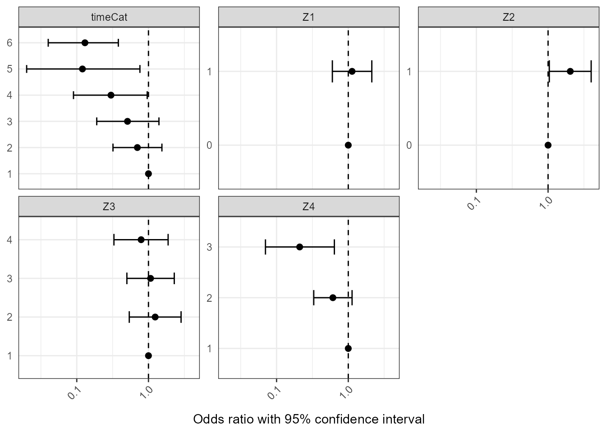

vignettes/adjusted-odds-ratio-example-vignette.Rmd
adjusted-odds-ratio-example-vignette.RmdThis vignette will walk you through how to use the package nbTransmission to estimate adjusted odds ratios for factors associated with a variable representing transmission in an infectious disease outbreak. As transmission is not always observable, this variable may be a proxy for transmission, such as genetic relatedness or results from contact tracing, but we will refer to it henceforth as cases being ‘linked’ or ‘transmission links.’
This tutorial will focus on using the nbTransmission package to model odds ratios. If you are new to using the nbTransmission package, we recommend starting with the vignette “Introductory tutorial for R Package nbTransmission” (https://sarahleavitt.github.io/nbTransmission/articles/nbTransmission-vignette.html).
Start by installing nbTransmission if you have not already done so, and then load the package:
devtools::install_github('sarahleavitt/nbTransmission')Set your seed to match results in this tutorial:
set.seed(0)This package implements an algorithm that takes a dataset of ordered possible infector-infectee pairs from an infectious disease outbreak and estimates the relative probability the cases are linked by direct transmission using naive Bayes (NB) and the odds ratios of covariates associated with transmission.
To estimate both quantities, we use an iterative estimation procedure. Because transmission is almost always unobserved, links are represent probable and not certain transmission events. In this setting, a given case could have multiple probable links when only one true link exists. The iterative procedure corrects for this by randomly choosing one link of all of the possible links to include in the training dataset multiple times. Multiple iterations allows each probable link a turn to represent the ‘true’ link. Within each iteration, we also run multiple cross validation folds to allow each pair in the training set an opportunity in the prediction dataset (this is more important in estimating relative probabilities). Final estimates of probabilities and odds ratios are the average of all estimates for a pair across the cross validation folds and iterations. For more details on the algorithm and NB, please see the previous vignette.
A key assumption of NB is that all variables in the model are independent. Thus, when using nbTransmission to calculate transmission probabilities or unadjusted odds ratios, one can add as many variables as one would like into the model without having to worry about variable selection as in a regression model. However, we use a bootstrapped logisitic regression model to calculate adjusted odds ratios, meaning we do need to consider which variables we want in the model to avoid overfitting.
Many methods exist for model fitting. In this tutorial, we present just one possible method. In short, we will first estimate unadjusted odds ratios for each variable, select the variables significant at the 0.1 level, and then rerun the algorithm with the bootstrapped logistic regression model using just those variables.
First we need to create the dataset needed to run the iterative model. Creation of the pairwise dataset and descriptions of all covariates are covered in detail in the previous vignette.
#load individual level data
data(pairData)
#create ordered pair level dataset
pairDataOrdered <- pairData[pairData$infectionDate.2 >= pairData$infectionDate.1, ]
#create SNP distances thresholds
#SNP distances less than 3 are considered transmission links
#SNP distances greater than 10 are non-transmission links
# SNP distances 4-10 are considered indeterminate and only used in the prediction dataset
pairDataOrdered$snpClose <- ifelse(pairDataOrdered$snpDist < 3, TRUE,
ifelse(pairDataOrdered$snpDist > 10, FALSE, NA))Now we can use the function nbTransmission to calculate unadjusted odds ratios.
indVar is the individual ID of the infector and infectee. The function looks for that value with the suffix “.1” and “.2” in the pair data frame (which would have been automatically created if you used indToPair to create the pair-level data frame).
n specifies the number of cross validation folds within each iteration.
m specifies the number of times to create the n cross validation folds within each iteration.
nReps specifies the number of iterations to run.
orType specifies the type of odds ratio to run. It takes values ‘univariate’ and ‘adjusted’.
Recall that we run the n cross validation folds within each of the nReps iterations, therefore in total you run naive Bayes nReps * n * m times. In this tutorial, n and nReps = 5 for computation speed but both should be at least 10.
unadjRes <- nbProbabilities(orderedPair = pairDataOrdered,
indIDVar = "individualID",
pairIDVar = "pairID",
goldStdVar = "snpClose",
covariates = c("Z1", "Z2", "Z3", "Z4", "timeCat"),
label = "SNPs", l = 1,
n = 5, m = 1, nReps = 5,
orType = "univariate")The results are a list with two data frames. The first contains the average and scaled relative transmission probabilities; we will not be using these in this tutorial. The second contains our unadjusted log odds ratios.
str(unadjRes)
#> List of 2
#> $ probabilities:'data.frame': 4950 obs. of 7 variables:
#> ..$ label : chr [1:4950] "SNPs" "SNPs" "SNPs" "SNPs" ...
#> ..$ pairID : chr [1:4950] "001_002" "022_003" "015_003" "020_003" ...
#> ..$ pAvg : num [1:4950] 0.8207 0.0508 0.0385 0.0375 0.0339 ...
#> ..$ pSD : num [1:4950] 0.36614 0.00853 0.0141 0.01163 0.01049 ...
#> ..$ pScaled : num [1:4950] 1 0.161 0.122 0.119 0.107 ...
#> ..$ pRank : num [1:4950] 1 1 2 3 4 5 6 7 8 8 ...
#> ..$ nEstimates: int [1:4950] 25 25 25 25 25 25 25 25 25 25 ...
#> $ estimates :'data.frame': 17 obs. of 7 variables:
#> ..$ label : chr [1:17] "SNPs" "SNPs" "SNPs" "SNPs" ...
#> ..$ level : chr [1:17] "Z1:0" "Z1:1" "Z2:0" "Z2:1" ...
#> ..$ nIter : int [1:17] 25 25 25 25 25 25 25 25 25 25 ...
#> ..$ logorMean: num [1:17] 0 0.122 0 0.712 0 ...
#> ..$ logorSE : num [1:17] NaN 0.323 NaN 0.342 NaN ...
#> ..$ logorCILB: num [1:17] NaN -0.5114 NaN 0.0412 NaN ...
#> ..$ logorCIUB: num [1:17] NaN 0.755 NaN 1.383 NaN ...The second data frame contains log odds ratios standard errors and 95% confidence intervals describing the contribution of each covariate value to the probabilities. The log odds ratios represent the association between the covariates and being transmission links, modified by the iterative estimation procedure. The standard errors are estimated using Rubin’s rules, a method developed for multiple imputation, to summarize the error across the iterations. We can look at the output in table or graph form:
library(knitr)
#Exponentiating the log odds ratios and creating a table of odds ratios
orTab <- unadjRes$estimates
orTab$orMean <- round(exp(orTab$logorMean), 2)
orTab$orCILB <- round(exp(orTab$logorCILB), 2)
orTab$orCIUB <- round(exp(orTab$logorCIUB), 2)
orTab$Value <- gsub("[A-z0-9]+\\:", "", orTab$level)
orTab$Variable <- gsub("\\:[A-z0-9+-<=>]+", "", orTab$level)
orTabPrint1 <- orTab[, c("Variable", "Value", "orMean", "orCILB", "orCIUB")]| Variable | Value | orMean | orCILB | orCIUB |
|---|---|---|---|---|
| Z1 | 0 | 1.00 | NaN | NaN |
| Z1 | 1 | 1.13 | 0.60 | 2.13 |
| Z2 | 0 | 1.00 | NaN | NaN |
| Z2 | 1 | 2.04 | 1.04 | 3.99 |
| Z3 | 1 | 1.00 | NaN | NaN |
| Z3 | 2 | 1.24 | 0.54 | 2.85 |
| Z3 | 3 | 1.07 | 0.50 | 2.29 |
| Z3 | 4 | 0.79 | 0.33 | 1.88 |
| Z4 | 1 | 1.00 | NaN | NaN |
| Z4 | 2 | 0.61 | 0.33 | 1.13 |
| Z4 | 3 | 0.21 | 0.07 | 0.64 |
| timeCat | 1 | 1.00 | NaN | NaN |
| timeCat | 2 | 0.70 | 0.32 | 1.54 |
| timeCat | 3 | 0.51 | 0.19 | 1.40 |
| timeCat | 4 | 0.30 | 0.09 | 0.96 |
| timeCat | 5 | 0.12 | 0.02 | 0.76 |
| timeCat | 6 | 0.13 | 0.04 | 0.38 |
library(ggplot2)
ggplot(data = orTab, aes(x = Value, y = orMean, ymin = orCILB,
ymax = orCIUB)) +
geom_point(size = 2) +
geom_errorbar(width = 0.3) +
geom_hline(aes(yintercept = 1), linetype = 2) +
facet_wrap(~Variable, scales = "free_y") +
ylab("Odds ratio with 95% confidence interval") +
theme_bw() +
theme(axis.ticks.y = element_blank(),
axis.title.y = element_blank(),
strip.text.y = element_text(hjust = 0, vjust = 1, angle = 360),
axis.text.x = element_text(angle = 45, hjust = 1),
axis.title.x = element_text(margin = margin(t = 10, r = 0, b = 0, l = 0)),
legend.position = "bottom") +
scale_y_log10(breaks = c(0.01, 0.1, 1, 10)) +
coord_flip()
Note that the confidence intervals generated by nbProbabilities are 95% confidence intervals, meaning the odds ratio is statistically significant at the 0.05 level if it does not contain 1. We want to identify odds ratios statistically significant at the 0.10 level for model selection, so we need to generate 90% confidence intervals. 1.645 is the z-score corresponding to 90% confidence intervals; you can change this to calculate confidence intervals for whatever value you’d like.
orTab$logor90CILB <- orTab$logorMean - 1.645*orTab$logorSE
orTab$logor90CIUB <- orTab$logorMean + 1.645*orTab$logorSE
orTab$or90CILB <- exp(orTab$logor90CILB)
orTab$or90CIUB <- exp(orTab$logor90CIUB)We can create an indicator for which associations are significant at the 0.1 level. We see variables Z2, Z4, and timeCat have significant associations. We will include these three variables in our adjusted model.
orTab$sig90pctCI <- ifelse(orTab$or90CILB < 1 & orTab$or90CIUB > 1, "Not significant", "Significant")
orTabPrint2 <- orTab[, c("Variable", "Value", "orMean", "or90CILB", "or90CIUB", "sig90pctCI")]| Variable | Value | orMean | or90CILB | or90CIUB | sig90pctCI |
|---|---|---|---|---|---|
| Z1 | 0 | 1.00 | NaN | NaN | NA |
| Z1 | 1 | 1.13 | 0.6638778 | 1.9215158 | Not significant |
| Z2 | 0 | 1.00 | NaN | NaN | NA |
| Z2 | 1 | 2.04 | 1.1607575 | 3.5807363 | Significant |
| Z3 | 1 | 1.00 | NaN | NaN | NA |
| Z3 | 2 | 1.24 | 0.6182017 | 2.4900323 | Not significant |
| Z3 | 3 | 1.07 | 0.5623750 | 2.0241972 | Not significant |
| Z3 | 4 | 0.79 | 0.3797575 | 1.6376455 | Not significant |
| Z4 | 1 | 1.00 | NaN | NaN | NA |
| Z4 | 2 | 0.61 | 0.3613764 | 1.0195813 | Not significant |
| Z4 | 3 | 0.21 | 0.0853616 | 0.5404608 | Significant |
| timeCat | 1 | 1.00 | NaN | NaN | NA |
| timeCat | 2 | 0.70 | 0.3616349 | 1.3558591 | Not significant |
| timeCat | 3 | 0.51 | 0.2208150 | 1.1901120 | Not significant |
| timeCat | 4 | 0.30 | 0.1115102 | 0.7948653 | Significant |
| timeCat | 5 | 0.12 | 0.0252413 | 0.5624551 | Significant |
| timeCat | 6 | 0.13 | 0.0525507 | 0.3190950 | Significant |
We again call nbProbabilities to run our adjusted model. Note two changes from the first time we ran this function:
We also now include the argument nBS to specify the number of bootstrap samples ran in each cross-validation fold. In this tutorial, nBS = 10 for computation speed but should be at least 100 in practice.
adjRes <- nbProbabilities(orderedPair = pairDataOrdered,
indIDVar = "individualID",
pairIDVar = "pairID",
goldStdVar = "snpClose",
covariates = c("Z2", "Z4", "timeCat"),
label = "SNPs", l = 1,
n = 5, m = 1, nReps = 5,
orType = "adjusted", nBS = 10)We again can look at the output in table form.
#Exponentiating the log odds ratios and creating a table of odds ratios
orTabAdj <- adjRes$estimates
orTabAdj <- orTabAdj[-c(orTabAdj$level == "(Intercept)"), ]
orTabAdj$orMean <- round(exp(orTabAdj$logorMean), 2)
orTabAdj$orCILB <- round(exp(orTabAdj$logorCILB), 2)
orTabAdj$orCIUB <- round(exp(orTabAdj$logorCIUB), 2)
orTabAdj$Variable <- substr(orTabAdj$level, 1, nchar(orTabAdj$level)-1)
orTabAdj$Value <- substr(orTabAdj$level, nchar(orTabAdj$level), nchar(orTabAdj$level))
orTabAdjPrint <- orTabAdj[, c("Variable", "Value", "orMean", "orCILB", "orCIUB")]| Variable | Value | orMean | orCILB | orCIUB |
|---|---|---|---|---|
| timeCat | 2 | 0.82 | 0.37 | 1.84 |
| timeCat | 3 | 0.37 | 0.01 | 9.54 |
| timeCat | 4 | 0.11 | 0.00 | 515.64 |
| timeCat | 5 | 0.00 | 0.00 | 220.31 |
| timeCat | 6 | 0.13 | 0.01 | 1.41 |
| Z2 | 1 | 1.66 | 0.81 | 3.37 |
| Z4 | 2 | 0.60 | 0.29 | 1.26 |
| Z4 | 3 | 0.11 | 0.00 | 17.27 |
The odds ratio describing the association between being a link and having a timeCat value of 5 (time between cases of 4-5 years) has a very large confidence interval upper bound. This is due to their being very few instances of transmission in this category, which leads to instability in the standard error calculation in the logistic regression.
table(pairDataOrdered$timeCat, pairDataOrdered$snpClose)
#>
#> FALSE TRUE
#> 1 290 94
#> 2 239 58
#> 3 215 37
#> 4 170 18
#> 5 146 6
#> 6 407 34If this occurs, one may consider other categorizations such that these small sample sizes do not occur. Here, we can combine categories 5 and 6 of timeCat:
pairDataOrdered$timeCat2 <- as.factor(ifelse(pairDataOrdered$timeCat == 6, 5, pairDataOrdered$timeCat ))We can then rerun the model to see this issue has been fixed.
adjRes2 <- nbProbabilities(orderedPair = pairDataOrdered,
indIDVar = "individualID",
pairIDVar = "pairID",
goldStdVar = "snpClose",
covariates = c("Z2", "Z4", "timeCat2"),
label = "SNPs", l = 1,
n = 5, m = 1, nReps = 5,
orType = "adjusted", nBS = 10)
orTabAdj2 <- adjRes2$estimates
orTabAdj2 <- orTabAdj2[-c(orTabAdj2$level == "(Intercept)"), ]
orTabAdj2$orMean <- round(exp(orTabAdj2$logorMean), 2)
orTabAdj2$orCILB <- round(exp(orTabAdj2$logorCILB), 2)
orTabAdj2$orCIUB <- round(exp(orTabAdj2$logorCIUB), 2)
orTabAdj2$Variable <- substr(orTabAdj2$level, 1, nchar(orTabAdj2$level)-1)
orTabAdj2$Value <- substr(orTabAdj2$level, nchar(orTabAdj2$level), nchar(orTabAdj2$level))
orTabAdjPrint2 <- orTabAdj2[, c("Variable", "Value", "orMean", "orCILB", "orCIUB")]| Variable | Value | orMean | orCILB | orCIUB |
|---|---|---|---|---|
| timeCat2 | 2 | 0.70 | 0.28 | 1.75 |
| timeCat2 | 3 | 0.52 | 0.15 | 1.81 |
| timeCat2 | 4 | 0.18 | 0.00 | 35.18 |
| timeCat2 | 5 | 0.11 | 0.03 | 0.39 |
| Z2 | 1 | 1.71 | 0.81 | 3.62 |
| Z4 | 2 | 0.61 | 0.30 | 1.25 |
| Z4 | 3 | 0.10 | 0.00 | 10.48 |